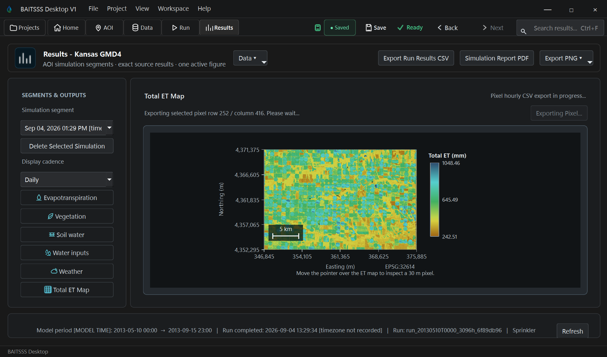

Questions
Frequently Asked Questions
Find concise answers about who developed BAITSSS, how BAITSSS Desktop differs from the earlier research implementation, required data, access, scientific use, and current development status.
 BAITSSS
BAITSSSTake control of your field ET, soil moisture, and irrigation through scientific software.
Research & Education
BAITSSS Desktop can support research and teaching where evapotranspiration, soil water, irrigation, vegetation, weather, and field observations need to be examined together in a reproducible project environment.
Explore research questions, university use, and the 2026 research frontier →BAITSSS Desktop V1
First public releaseBAITSSS Desktop V1 brings project setup, data preparation, model execution, Results, and scientific export into one connected Windows application.
The modernization balances scientific continuity with usability, versatility, computational efficiency, reproducibility, and a cleaner software architecture. Fields, simulation periods, inputs, settings, runs, maps, time series, and exports remain connected within the same project.
The result is a more usable and maintainable platform for field-scale analysis, research, education, model evaluation, and collaborative scientific work, while preserving the underlying BAITSSS scientific model.
Inside BAITSSS Desktop V1
Move from field definition and data readiness to hourly execution and mapped Results within the same BAITSSS Desktop project.

BAITSSS Desktop workflow
A BAITSSS Desktop project connects field definition, data preparation, simulation, and Results in one workflow. The Software page shows the product workflow; the Example Project provides the complete step-by-step route.
Questions
Find concise answers about who developed BAITSSS, how BAITSSS Desktop differs from the earlier research implementation, required data, access, scientific use, and current development status.
Contact
Contact BAITSSS for questions about the software, scientific use, research or educational collaboration, institutional interest, or access pathways.